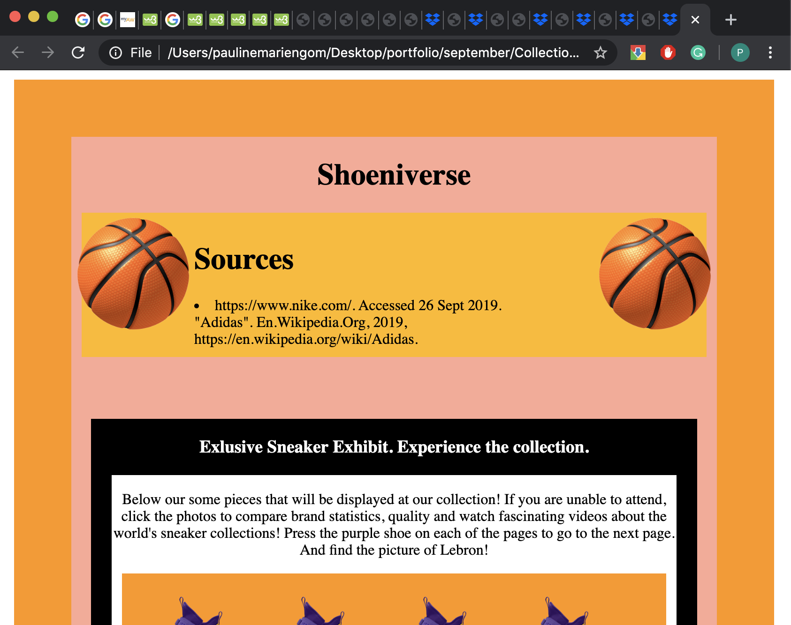

Pauline's Portfolio
projects
part 4 - links, tables and image properties


click image to go to webpage

this project was our collection project. the main goal was creating links that can be reached through images.
we also incorperated tables, which allowed us to give more information about our collection prices, and their brand
information. this was a group project, that really allowed me, as a coder, to understand the difference between
working alone and having a collaborative effort. navigating how to code as a group, and dividing time was pretty
mind-opening.